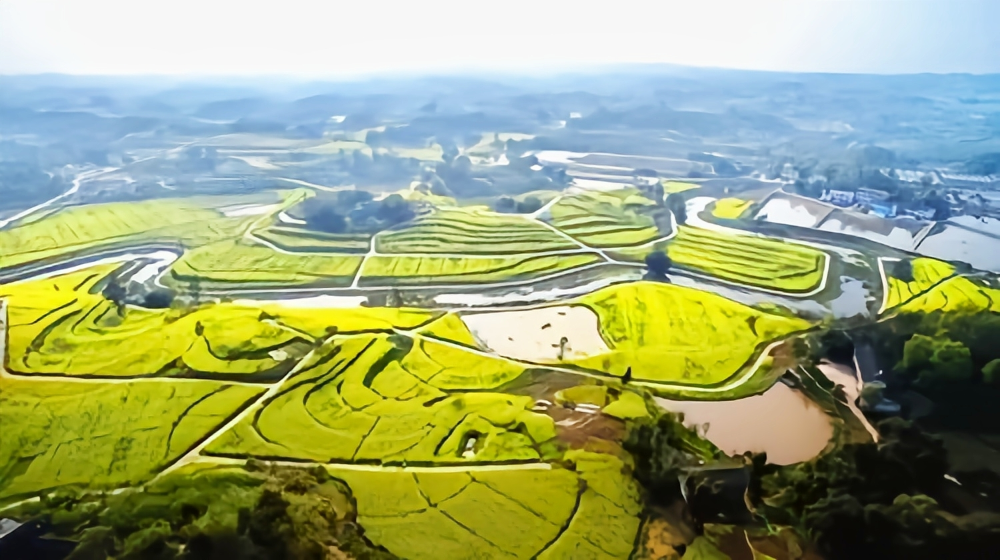
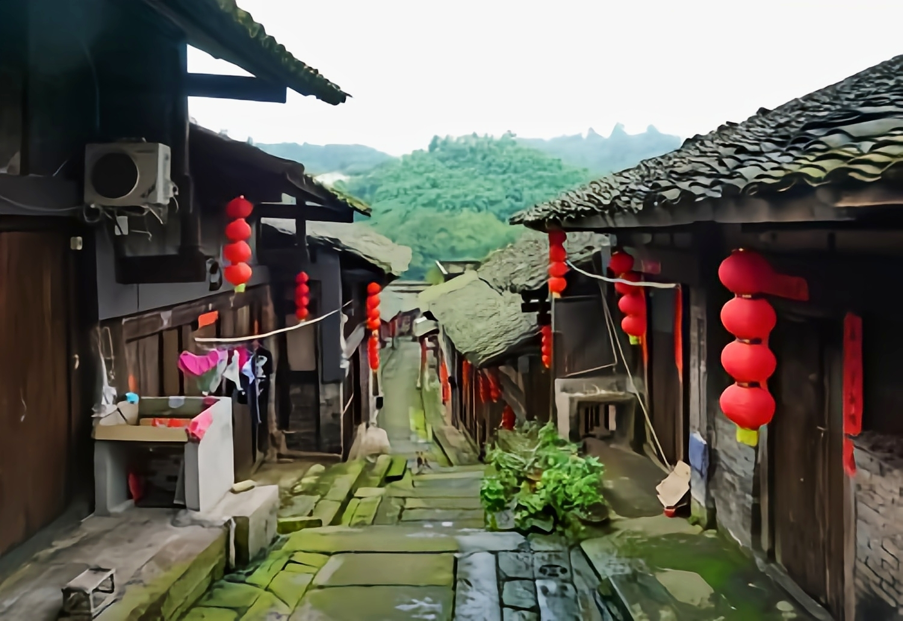

2011-2015年度全国科普示范县（市、区）
江津
在行政区划上为重庆市江津区。是一个历史文
化悠久的城市，以地处长江要津而得名。江津位于
重庆西南长江之滨，距渝小区公路里程50公里；铁
路里程65公里；水路里程72公里。江津城区气候特
征与重庆相近，但综合气象指标要优于重庆。江津
区域地形南高北低，最低处珞璜十坝海拔178．5米；
最高点四面山蜈蚣坝海拔l 709．4米，主城区平均海
拔209．7米，50年一遇洪水位199．门米，全区面积
3200．44平方公里，人口145万。
大江西来，在江津城区受阻于鼎山转而向北，
复受阻于马骏岭东巡，再受阻于高家坪南巡南回，
最后转向东北，环鼎山绕了一个几字形的大弯，故
江津又名几江。
|  | 永兴镇金色黄庄景区，虽然大部分油菜花田都比较平坦，但是，一条弯弯绕绕的小河贯穿其中，周边还有一些小山丘环绕，因此，你在拍照打卡的时候，可以把村庄、小河、甚至当地的土鸡土鸭土鹅们结合在一起拍摄，既增添了乡村气息浓郁，又让照片生动活泼。 |
石笋山[1]属云雾山系，位于永川区何埂镇和江津区石门镇交界处，距永川市区29公里，距江津市区34公里，山中有江津区境内的男石笋山，与永川区境内的女石笋山，分别为两座最高山峰，平均海拔约700余米，山中常年青峦叠翠，云雾缭绕，植被茂密，路径险峻，景色迷人，山涧清泉湖泊与绿荫相映生辉，石笋山有珍稀动植物及名贵药材等1500余种，景区有佛寺、道观、城墙、城门、尖脑壳等遗迹；传说石笋山还是铁拐李得道成仙的地方，亦有铁拐李坐化台，饿殍石等景点，华轩居士据经多份民间资料及古籍考证铁拐李乾德四年在石笋山邀请汉钟离、张果老、韩湘子、蓝采和、吕洞宾、何仙姑、曹国舅等到石笋山聚会 |
|
|  | 塘河古镇位于重庆江津区西南渝川结合地带，重庆市（省级）风景名胜区黑石山----滚子坪境内，东北面与白沙镇、永兴镇毗邻，西南面与四川合江接壤。 |